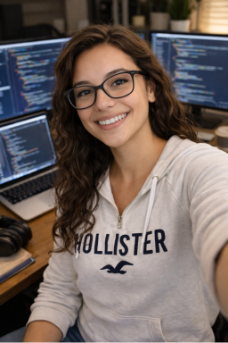

Before and After Prompt Refinement


Reflection
This image was very interesting to create because I had a hard time making someone that I felt looked like me. The first image was generated through a short written description of what I look like, including my hair texture, ethnicity, and clothes I like to wear. I then further refined the selfie by uploading a few different photos of myself so that ChatGPT could have a better idea of how I look. For the first few tries, it would basically use the same photo it generated before, but slightly change my hair texture or make my face smaller. I felt that besides the hair, the photos weren't getting any closer to the ones that I uploaded. It then started refusing to share the image it generated, because it violated "our guardrails around acceptable depictions of teens and children," even though I am 20 years old. When I told it to make me look twenty, it generated a new image that felt much farther from any previous prompt I gave it, which is the one I submitted here. Further attempts to refine the image were stopped by the same children and teens violation.
Through this experience, I found that I had a really difficult time trying to make slight adjustments to the image. It felt like any prompt I gave would keep the basic traits, but then shift in a different direction that still frustratingly did not look like me, especially in the final image. I see myself in basic features like my hair and glasses, and my jewelry and clothes that are copied from my uploaded photos. But I couldn't get the AI to portray anything nuanced about myself, like the details of my face--the things that I see in the mirror and recognize as "me."
Attribution
I used ChatGPT to create the images, and gave it prompts surrounding my ethnicity, age, and features, as well as suggesting poses. I also changed the results using photos of myself.